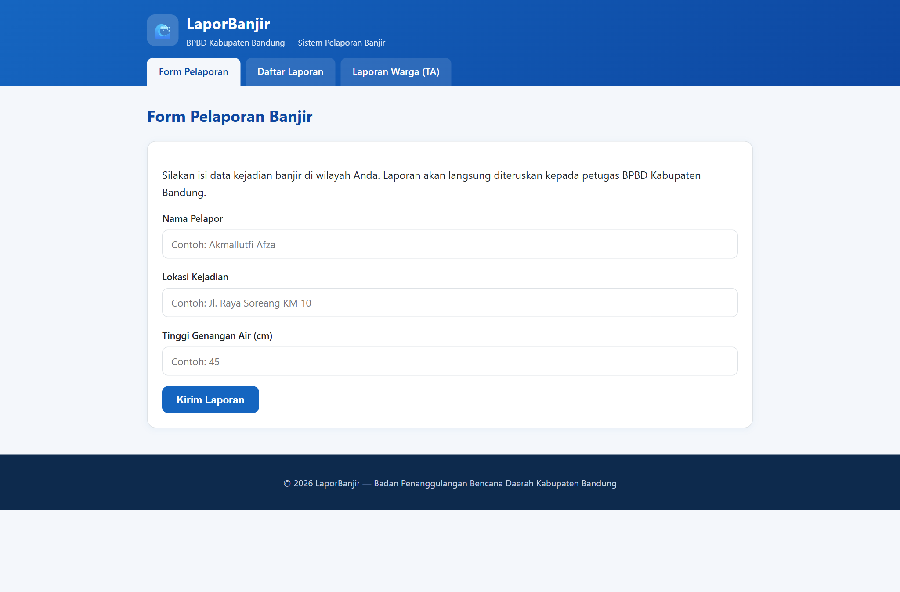
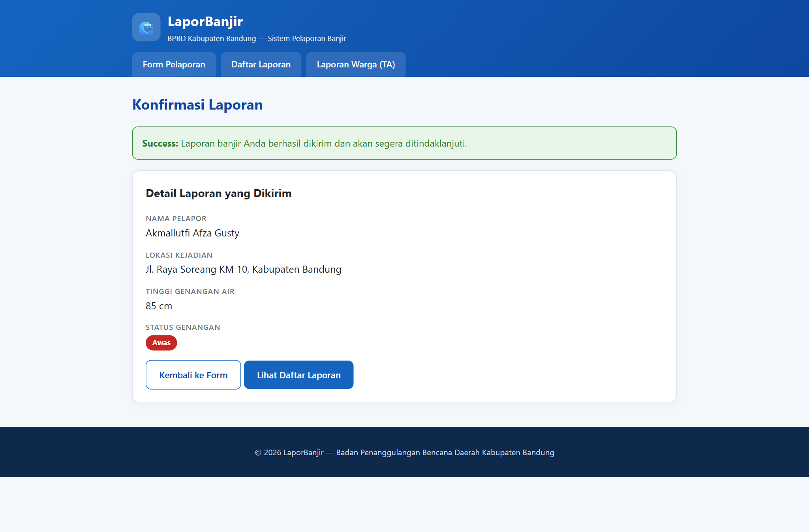
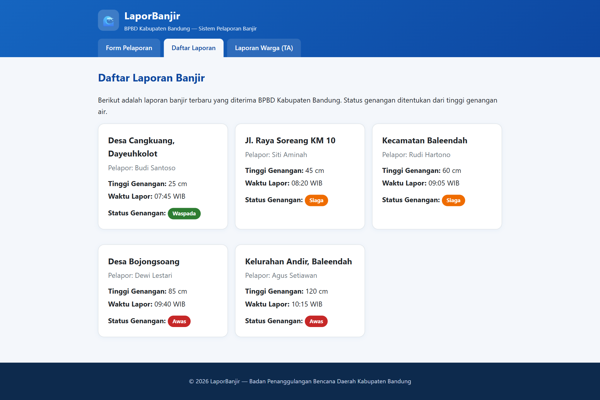
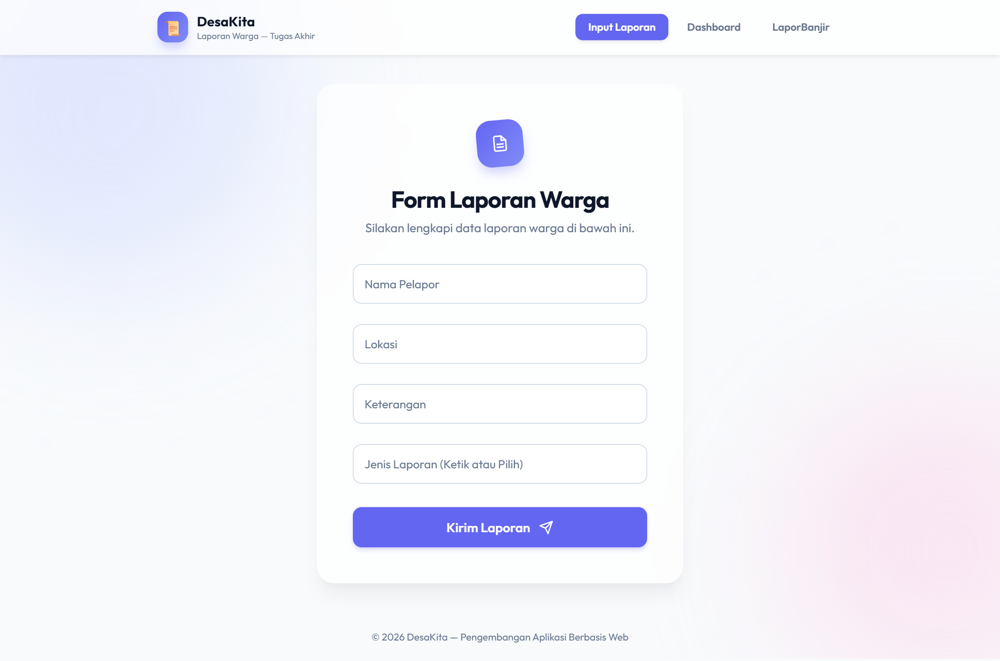
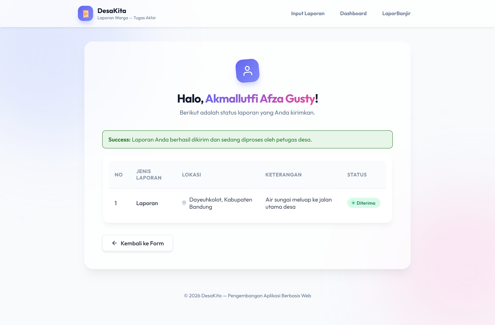
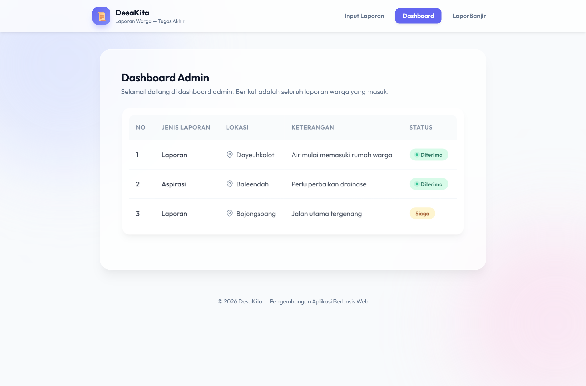

MODUL 3
Blade Template Laravel
Disusun Oleh:
Akmallutfi Afza Gusty
NIM: 707012500064
Kelas: SIKC 49 - 04
Mata Kuliah:
Pengembangan Aplikasi Berbasis Web
Dosen Pengampu:
Diash Firdaus
Program Studi Sistem Informasi
Fakultas Rekayasa Industri — Telkom University
Tahun Akademik 2026/2027
Melalui praktikum Modul 3 ini, saya ingin mencapai beberapa kemampuan berikut. Pertama,
memahami konsep Blade Template sebagai template engine bawaan Laravel beserta cara
kerja Laravel mengompilasi sebuah view menjadi kode PHP yang disimpan di cache. Kedua, mampu
menuliskan sintaks dasar Blade, terutama {{ }} untuk menampilkan data. Ketiga,
mampu memanfaatkan directive Blade untuk percabangan (@if, @elseif,
@else) dan perulangan (@foreach, @forelse) agar tampilan
dapat menyesuaikan data yang dikirim controller.
Keempat, mampu membangun tampilan web yang seragam dan mudah dirawat dengan fitur
layouting @extends, @section, dan @yield. Kelima,
mampu membuat dan memakai kembali potongan tampilan melalui komponen Blade (<x-...>)
dan partial (@include). Terakhir, saya ingin menerapkan seluruh konsep tersebut pada
dua studi kasus, yaitu aplikasi pelaporan banjir “LaporBanjir” milik BPBD
Kabupaten Bandung serta perubahan tampilan Tugas Akhir saya menjadi Blade View.
Praktikum ini dikerjakan dengan perangkat dan perkakas berikut.
Perangkat Keras:
Perangkat Lunak:
| Perangkat Lunak | Versi / Keterangan |
|---|---|
| Laragon | Server lokal Apache & MySQL (full) |
| PHP | 8.5.10 (NTS, Win32-vs17-x64) |
| Composer | 2.10.3 (dependency manager PHP) |
| Laravel Framework | 13.17 |
| Visual Studio Code | Teks editor / IDE |
| Google Chrome | Browser pengujian |
| Git | Kontrol versi |
Pengerjaan tugas praktikum dibagi menjadi dua bagian sesuai ketentuan Modul 3. Bagian pertama adalah pembuatan aplikasi LaporBanjir dengan tiga halaman (form, konfirmasi, dan daftar laporan). Bagian kedua adalah penerapan Blade Template pada Tugas Akhir. Kedua bagian memakai pola MVC (Model–View–Controller), tetapi karena masih berupa prototipe, data tidak diambil dari database melainkan ditulis dalam bentuk array di dalam controller.
Aplikasi dibuat di dalam proyek Laravel yang telah disiapkan. Struktur view yang dibangun mengikuti pola pemisahan layout, halaman, komponen, dan partial seperti diperlihatkan pada potongan struktur berikut.
resources/views/
├── layouts/
│ ├── app.blade.php // layout utama LaporBanjir
│ └── ta.blade.php // layout utama Tugas Akhir
├── components/
│ └── alert.blade.php // komponen pesan <x-alert>
├── partials/
│ ├── laporan-card.blade.php // partial kartu laporan banjir
│ └── ta-row.blade.php // partial baris tabel laporan warga
├── laporan/
│ ├── create.blade.php // halaman form pelaporan
│ ├── konfirmasi.blade.php // halaman konfirmasi
│ └── index.blade.php // halaman daftar laporan
└── ta/
├── form.blade.php // form laporan warga (Tugas Akhir)
├── tampil.blade.php // hasil/konfirmasi laporan warga
└── dashboard.blade.php // dashboard admin
Langkah awal adalah membuat controller dengan perintah artisan, kemudian membuat file-file
view secara manual di dalam folder resources/views.
php artisan make:controller LaporanBanjirController php artisan make:controller DesaKitaController
Route menghubungkan alamat URL dengan method pada controller. Setiap halaman diberi
named route agar dapat dipanggil dari Blade dengan helper route()
sehingga tautan navigasi tidak ditulis manual. Isi routes/web.php:
<?php
use Illuminate\Support\Facades\Route;
use App\Http\Controllers\LaporanBanjirController;
use App\Http\Controllers\DesaKitaController;
// Halaman awal diarahkan ke form pelaporan LaporBanjir.
Route::get('/', [LaporanBanjirController::class, 'create'])->name('home');
// 1. Aplikasi LaporBanjir
Route::get('/laporan', [LaporanBanjirController::class, 'create'])->name('laporan.create');
Route::post('/laporan', [LaporanBanjirController::class, 'store'])->name('laporan.store');
Route::get('/laporan/konfirmasi', [LaporanBanjirController::class, 'konfirmasi'])->name('laporan.konfirmasi');
Route::get('/laporan/daftar', [LaporanBanjirController::class, 'index'])->name('laporan.index');
// 2. Tugas Akhir yang telah menjadi Blade View
Route::get('/ta', [DesaKitaController::class, 'form'])->name('ta.form');
Route::post('/ta', [DesaKitaController::class, 'tampil'])->name('ta.store');
Route::get('/ta/hasil', [DesaKitaController::class, 'hasil'])->name('ta.hasil');
Route::get('/ta/dashboard', [DesaKitaController::class, 'dashboard'])->name('ta.dashboard');
Halaman form dikirim melalui method POST ke laporan.store, sedangkan
halaman konfirmasi dan daftar laporan diakses melalui method GET. Dengan demikian
seluruh halaman dapat diakses melalui route masing-masing.
Controller berperan menyiapkan data dan mengolah request. Pada LaporanBanjirController
terdapat method dataLaporan() yang menyimpan contoh data laporan dalam bentuk array,
method create() untuk menampilkan form, store() untuk memvalidasi dan
memproses data POST, konfirmasi() untuk menampilkan kembali data yang dikirim, serta
index() untuk daftar laporan. Potongan method store():
public function store(Request $request)
{
$validated = $request->validate([
'nama' => 'required|string|max:100',
'lokasi' => 'required|string|max:150',
'tinggi' => 'required|numeric|min:0|max:1000',
]);
// Simpan sementara di session, lalu arahkan ke halaman konfirmasi.
return redirect()
->route('laporan.konfirmasi')
->with('laporan', [
'nama' => $validated['nama'],
'lokasi' => $validated['lokasi'],
'tinggi' => (float) $validated['tinggi'],
]);
}
Fungsi compact() dan with() memastikan data dikirim dari controller ke
view, sehingga tidak ada logika PHP di dalam file tampilan.
Layout utama layouts/app.blade.php menyimpan bagian yang sama di setiap halaman,
yaitu header berisi nama sistem, menu navigasi memakai named route, footer, dan CSS. Bagian
yang berubah ditandai dengan @yield. Potongan penting layout:
<title>@yield('title', 'Beranda') | LaporBanjir</title>
...
<nav class="main">
<a href="{{ route('laporan.create') }}">Form Pelaporan</a>
<a href="{{ route('laporan.index') }}">Daftar Laporan</a>
</nav>
...
<main>
@yield('content')
</main>
<footer>© {{ date('Y') }} LaporBanjir</footer>
Setiap halaman kemudian mewarisi layout ini menggunakan @extends('layouts.app'),
mengisi judul dengan @section('title', ...), dan mengisi konten dengan
@section('content') ... @endsection.
Halaman form laporan/create.blade.php berisi input nama pelapor, lokasi kejadian,
dan tinggi genangan air. Form dikirim dengan method POST dan menyertakan token
@csrf.
@extends('layouts.app')
@section('title', 'Form Pelaporan')
@section('content')
<h2 class="page-title">Form Pelaporan Banjir</h2>
<form action="{{ route('laporan.store') }}" method="POST">
@csrf
<label for="nama">Nama Pelapor</label>
<input type="text" id="nama" name="nama" value="{{ old('nama') }}" required>
<label for="lokasi">Lokasi Kejadian</label>
<input type="text" id="lokasi" name="lokasi" value="{{ old('lokasi') }}" required>
<label for="tinggi">Tinggi Genangan Air (cm)</label>
<input type="number" id="tinggi" name="tinggi" min="0" step="1" value="{{ old('tinggi') }}" required>
<button type="submit" class="btn">Kirim Laporan</button>
</form>
@endsection
Komponen components/alert.blade.php dibuat sekali dan dapat dipakai berulang dengan
atribut berbeda. Warna border ditentukan memakai operator ternary berdasarkan nilai
$type.
@props(['type' => 'success', 'message' => ''])
@php
$warna = match ($type) {
'error' => ['garis' => '#c62828', 'latar' => '#fdecea', 'teks' => '#c62828'],
'warning' => ['garis' => '#ef6c00', 'latar' => '#fff4e5', 'teks' => '#ef6c00'],
default => ['garis' => '#2e7d32', 'latar' => '#e8f5e9', 'teks' => '#2e7d32'],
};
@endphp
<div style="padding:14px 16px;border-radius:10px;border:1px solid {{ $warna['garis'] }};background:{{ $warna['latar'] }};color:{{ $warna['teks'] }};">
<strong>{{ ucfirst($type) }}:</strong> {{ $message }}
</div>
Komponen ini dipanggil pada halaman konfirmasi dengan
<x-alert type="success" message="..." />.
Halaman konfirmasi menampilkan pesan berhasil memakai komponen <x-alert> dan
mengulang kembali data yang telah dikirim. Status genangan ditentukan dengan directive
@if/@elseif/@else: kurang dari 30 cm Waspada, 30–70 cm Siaga,
dan lebih dari 70 cm Awas.
@extends('layouts.app')
@section('title', 'Konfirmasi Laporan')
@section('content')
<h2 class="page-title">Konfirmasi Laporan</h2>
<x-alert type="success" message="Laporan banjir Anda berhasil dikirim." />
<dl class="data-list">
<dt>Nama Pelapor</dt><dd>{{ $laporan['nama'] }}</dd>
<dt>Lokasi Kejadian</dt><dd>{{ $laporan['lokasi'] }}</dd>
<dt>Tinggi Genangan Air</dt><dd>{{ $laporan['tinggi'] }} cm</dd>
<dt>Status Genangan</dt>
<dd>
@if($laporan['tinggi'] < 30)
<span class="badge waspada">Waspada</span>
@elseif($laporan['tinggi'] <= 70)
<span class="badge siaga">Siaga</span>
@else
<span class="badge awas">Awas</span>
@endif
</dd>
</dl>
@endsection
Satu kartu laporan dipisahkan ke dalam partial
partials/laporan-card.blade.php. Partial ini hanya berfokus menampilkan satu laporan
yang variabelnya dikirim melalui @include.
<div class="card">
<h3>{{ $laporan['lokasi'] }}</h3>
<p>Pelapor: {{ $laporan['nama'] }}</p>
<p><strong>Tinggi Genangan:</strong> {{ $laporan['tinggi'] }} cm</p>
<p><strong>Status Genangan:</strong>
@if($laporan['tinggi'] < 30)
<span class="badge waspada">Waspada</span>
@elseif($laporan['tinggi'] <= 70)
<span class="badge siaga">Siaga</span>
@else
<span class="badge awas">Awas</span>
@endif
</p>
</div>
Halaman daftar laporan laporan/index.blade.php menampilkan seluruh laporan dengan
directive perulangan @forelse dan memanggil partial di atas.
@extends('layouts.app')
@section('title', 'Daftar Laporan')
@section('content')
<h2 class="page-title">Daftar Laporan Banjir</h2>
<div class="grid">
@forelse($laporans as $laporan)
@include('partials.laporan-card', ['laporan' => $laporan])
@empty
<p class="empty">Belum ada laporan banjir yang masuk.</p>
@endforelse
</div>
@endsection
Pada bagian kedua, tampilan Tugas Akhir diubah menjadi Blade View. Sama seperti LaporBanjir,
Tugas Akhir memakai satu layout utama layouts/ta.blade.php yang berisi header, menu
navigasi bernama, footer, dan CSS (efek glassmorphism). Tampilan sebelum diubah berupa file
HTML dan PHP statis; setelah diubah setiap halaman cukup mewarisi layout.
// layouts/ta.blade.php (potongan)
<title>@yield('title', 'DesaKita') | Laporan Warga</title>
<nav class="ta-nav">
<a href="{{ route('ta.form') }}">Input Laporan</a>
<a href="{{ route('ta.dashboard') }}">Dashboard</a>
</nav>
<main class="ta-wrap">@yield('content')</main>
<footer>© {{ date('Y') }} DesaKita</footer>
Controller DesaKitaController menyiapkan data laporan warga dan mengirimkannya ke
view. Directive perulangan @forelse dipakai pada halaman dashboard, sedangkan
directive percabangan @if dipakai untuk menentukan label status pada partial
partials/ta-row.blade.php.
// ta/dashboard.blade.php (potongan)
@forelse($dataWarga as $item)
@include('partials.ta-row', ['row' => $item, 'no' => $loop->iteration])
@empty
<tr><td colspan="5">Belum ada data laporan.</td></tr>
@endforelse
// partials/ta-row.blade.php (potongan)
<td class="text-center">
@if(($row['tinggi'] ?? 0) > 1)
<span class="ta-badge proses">Siaga</span>
@else
<span class="ta-badge diterima">Diterima</span>
@endif
</td>
Aplikasi dijalankan dengan perintah artisan serve, kemudian setiap halaman diuji melalui
browser pada alamat 127.0.0.1:8000. Pengujian meliputi pengisian form dan pengiriman
data untuk memastikan halaman konfirmasi menampilkan kembali data dengan benar.
php artisan serve # kemudian buka: # http://127.0.0.1:8000/laporan # http://127.0.0.1:8000/laporan/daftar # http://127.0.0.1:8000/ta # http://127.0.0.1:8000/ta/dashboard
Berikut adalah tangkapan layar hasil aplikasi yang telah dijalankan dan diuji melalui browser. Setiap gambar diberi nomor, keterangan, dan penjelasan singkat.

Gambar 4.1 Halaman Form Pelaporan LaporBanjir
Gambar 4.1 menampilkan halaman form pelaporan yang mewarisi layouts/app.blade.php.
Tampak header bernama sistem, menu navigasi, tiga input (nama pelapor, lokasi kejadian, dan tinggi
genangan air), tombol kirim, serta footer. Form mengirim data melalui method POST ke named route
laporan.store.

Gambar 4.2 Halaman Konfirmasi dan Komponen Alert
Gambar 4.2 memperlihatkan halaman konfirmasi setelah form dikirim. Pesan keberhasilan
ditampilkan menggunakan komponen Blade <x-alert type="success" ... />. Data yang
dikirim (nama, lokasi, tinggi 85 cm) ditampilkan kembali, dan status genangan dihitung dengan
@if/@elseif/@else sehingga muncul label Awas karena tinggi melebihi 70 cm.

Gambar 4.3 Halaman Daftar Laporan dengan Status Genangan
Gambar 4.3 menampilkan daftar laporan hasil perulangan @forelse yang memanggil partial
partials.laporan-card. Terlihat tiga kategori status: Waspada (25 cm, hijau),
Siaga (45–60 cm, oranye), dan Awas (85–120 cm, merah). Hal ini membuktikan
directive percabangan bekerja sesuai ketentuan modul.

Gambar 4.4 Halaman Form Laporan Warga (Tugas Akhir)
Gambar 4.4 adalah halaman Tugas Akhir yang telah diubah menjadi Blade View. Berbeda dari
sebelumnya yang berupa HTML statis, kini halaman mewarisi layouts/ta.blade.php dan
memakai header, menu navigasi, serta footer yang seragam.

Gambar 4.5 Halaman Hasil Laporan Warga
Gambar 4.5 menunjukkan halaman hasil setelah laporan warga dikirim. Komponen
<x-alert> kembali dipakai untuk pesan sukses, dan baris tabel ditampilkan melalui
partial partials.ta-row.blade.php.

Gambar 4.6 Dashboard Admin Tugas Akhir
Gambar 4.6 menampilkan dashboard admin yang menampilkan seluruh data laporan warga dengan
perulangan @forelse. Status setiap baris ditentukan oleh directive @if
pada partial sehingga muncul label Diterima atau Siaga.
Pembagian layout, komponen, dan partial. Layout layouts/app.blade.php dibuat
untuk menampung bagian yang sifatnya statis dan berulang di setiap halaman, yaitu header, menu
navigasi, footer, dan CSS. Dengan cara ini, ketika warna atau menu ingin diubah, saya cukup
mengubah satu file dan seluruh halaman yang mewarisinya ikut berubah. Komponen
<x-alert> dipakai untuk elemen antarmuka kecil yang muncul di banyak tempat
(pesan sukses pada halaman konfirmasi LaporBanjir maupun Tugas Akhir) karena komponen menerima
atribut sehingga lebih fleksibel. Sementara itu, partial
partials/laporan-card.blade.php dan partials/ta-row.blade.php dipakai
untuk memecah bagian tampilan yang besar (kartu dan baris tabel) agar view utama lebih ringkas dan
mudah dibaca. Pembagian ini sesuai panduan modul: gunakan komponen untuk elemen UI kecil yang
menerima atribut, dan partial untuk memecah halaman yang panjang.
Perbedaan sebelum dan sesudah memakai Blade. Sebelumnya, tampilan Tugas Akhir berupa file
HTML tersendiri yang menuliskan ulang bagian <head>, CSS, dan struktur halaman
di setiap file, serta mencampur logika PHP langsung di dalam tampilan. Setelah memakai Blade,
setiap halaman cukup menulis @extends dan @section, data ditampilkan
dengan {{ }} yang otomatis melakukan escape sehingga lebih aman, dan logika
percabangan serta perulangan ditulis dengan directive yang lebih ringkas. Kode pun menjadi lebih
konsisten dan mudah dirawat.
Kendala dan cara penyelesaiannya. Selama praktikum ada beberapa kendala yang saya
temukan. Pertama, saat pertama kali data hasil submit tidak terbaca di halaman konfirmasi karena
data hanya dikirim lewat redirect() tanpa disimpan. Masalah ini diselesaikan dengan
menggunakan ->with('laporan', ...) sehingga data disimpan sementara di session.
Kedua, halaman konfirmasi sempat menampilkan nilai kosong ketika diakses langsung tanpa mengirim
form; hal ini diatasi dengan pengecekan di controller dan mengarahkan kembali ke form apabila data
session tidak ditemukan. Ketiga, pada halaman Tugas Akhir label floating input tidak naik
ketika field kosong karena atribut placeholder tidak diisi spasi; solusinya adalah
menuliskan placeholder=" " dan memastikan file CSS serta JavaScript tetap dimuat
melalui helper asset(). Terakhir, saya memastikan setiap directive ditutup dengan
benar (@if dengan @endif, @forelse dengan
@endforelse) agar tidak terjadi galat sintaks saat Blade dikompilasi.
Kesesuaian dengan ketentuan tugas. Aplikasi LaporBanjir telah memenuhi ketentuan pada
bagian 3.5: layout utama layouts/app.blade.php berisi header, menu bernama, footer,
dan CSS (poin a); daftar laporan memakai @forelse dan status ditentukan dengan
@if/@elseif/@else (poin b); halaman konfirmasi memakai komponen
<x-alert> (poin c); kartu laporan ditampilkan melalui partial dengan
@include (poin d); dan setiap halaman dapat diakses melalui route (poin e). Tugas Akhir
juga telah memenuhi ketentuan: layout utama dengan @extends, directive
@if dan @forelse, komponen/partial, serta named route pada navigasi.
Praktikum Modul 3 berhasil dilaksanakan. Saya dapat menyimpulkan bahwa Blade Template sangat
membantu dalam menyusun tampilan Laravel secara terstruktur. Fitur layouting
(@extends, @section, @yield) membuat bagian tampilan yang
sama cukup ditulis sekali sehingga setiap halaman terlihat seragam dan mudah dikembangkan.
Directive percabangan (@if/@elseif/@else) dan perulangan
(@foreach/@forelse) memudahkan penyajian data dinamis yang dikirim dari controller,
seperti status genangan pada aplikasi LaporBanjir. Penggunaan komponen
(<x-alert>) dan partial (@include) juga terbukti membuat kode tidak
ditulis berulang-ulang serta lebih mudah dirawat. Pada akhirnya, seluruh tampilan Tugas Akhir saya
berhasil diubah menjadi Blade View dan dapat dijalankan dengan baik di browser.
Kode program lengkap dapat diakses melalui tautan repositori GitHub berikut:
https://github.com/USERNAME/TA-Modul3-Blade-Template (silakan ganti USERNAME dengan akun GitHub masing-masing sebelum dikumpulkan)
Seluruh kode sumber juga tersimpan pada folder proyek Laravel dengan struktur yang telah dijelaskan pada bagian 3.1, meliputi file controller, route, layout, komponen, partial, dan view.
Hasil praktikum akan dipresentasikan di kelas berupa demonstrasi aplikasi yang berjalan (halaman form, konfirmasi, daftar laporan, serta halaman Tugas Akhir) disertai penjelasan kode program dan sesi tanya jawab dengan dosen pengampu.